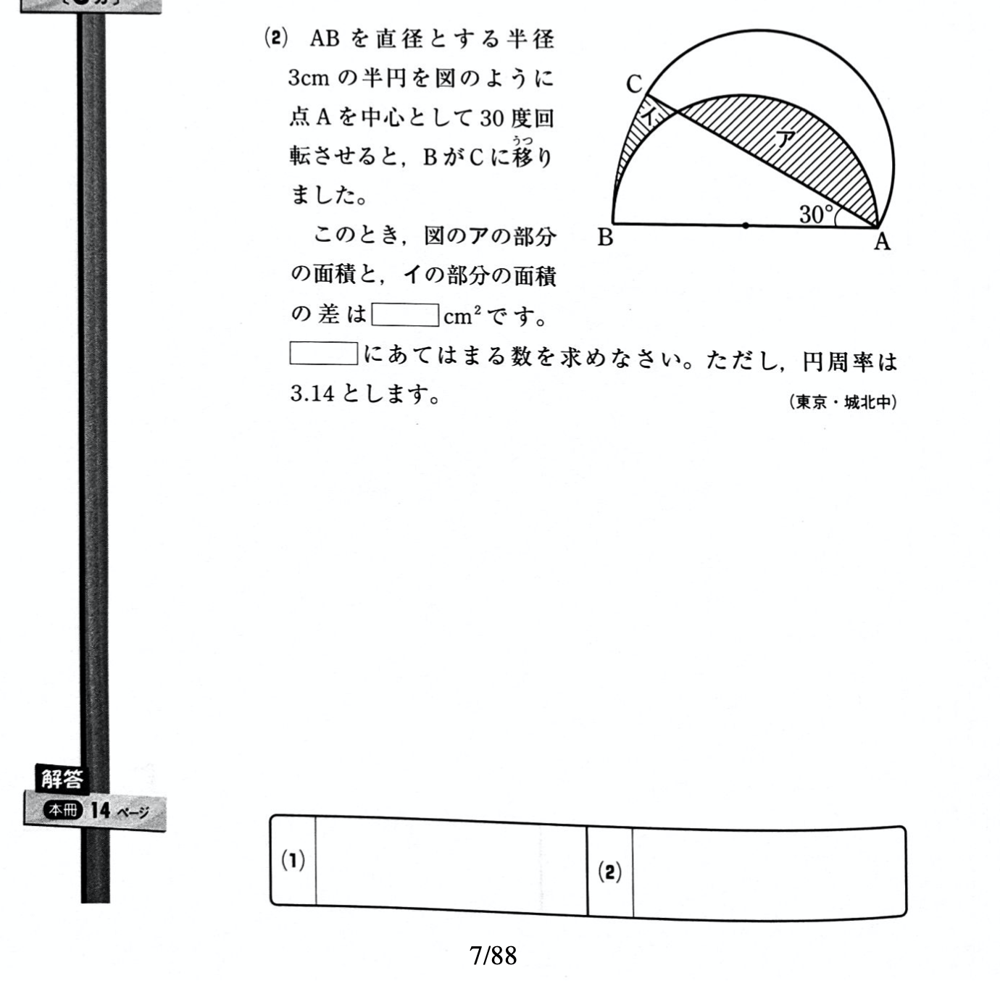

Table of Contents
1 はじめに
小学生の娘が算数で間違った問題を、スキャンしてまとめてPDF化しています。しかし、必要なページだけ印刷したつもりが、結構ページ番号がずれていて、何度もやりなおしたりしています。電子化したつもりが意外とアナログです。そこで、自動でPDFファイルにページ番号を付けたいと思いました。ヒューマンエラーによるページ番号のずれが防げる、またはずれてもすぐに気がつくので。
しかし、PDFにページ番号を付けたいという単純なことなのに、意外にも良い実現方法が見つかりません。検索した結果、いくつかWebサービスを見つけて試してみましたが、あるものはページを入れる位置が気に入らない、またあるものは、たくさんページ番号を付けていると有料になる(しかも月極subscription)などでした。
そこで、最近使えるようになって気を良くしているPythonで、PDFにページ番号が付けられないか調べてみたのですが、このユースケースに対応するPDFライブラリは無さそう(少なくとも単体では)、ということがわかりました。
2 ReportLab PDFライブラリ
PythonでのPDFライブラリで有名なものは、PyPDF2, pdfrwあたりのようです。これらは、複数のPDFファイルをマージしたり、逆に分割したり、ページを入れ替えたりといったことが得意ですが、「既存PDFファイルにページ番号を付加する」というユースケースには対応していないようです。
更に調べてみると、どうやらReportLabライブラリでページ番号を付けられそうだ、ということがわかりました。 https://www.blog.pythonlibrary.org/2013/08/12/reportlab-how-to-add-page-numbers/
このWebページはとても期待させるタイトルなのですが、サンプルコードを見てみると疑問がわいてきます。そもそも、既存PDFファイルを読み込んでおらず、新規に作成したPDFのページにページ番号を付与しているようです。駄目じゃん。。。
マニュアルにも一通り目を通してみます。 https://www.reportlab.com/docs/reportlab-userguide.pdf
ここでも、既存PDFファイルを読み込む説明はありませんでした。
3 ReportLab + pdfrwを組み合わせる
それでも諦めずに検索を続けたところ、見つけました。 https://stackoverflow.com/questions/28281108/reportlab-how-to-add-a-footer-to-a-pdf-file
さすがstackoverflow! 日本のqiitaと並んで大好きです。 どうやら、ReportLabとpdfrwを組み合わせるとできそうなことが書いてあります。 気になる記述もありますが。。。
DISCLAIMER: Tested on Linux using as input file a pdf file generated by Reportlab. It would probably not work in an arbitrary pdf file.
「ReportLabで作成したPDFファイルでテストしたけど、任意のPDFファイルだと動かないんじゃないかな」
・・・えー!! でもこれしか頼れる物がありません。試してみましょう。
stakoverflowのページに載っているサンプルコードを改変してみます。
from reportlab.pdfgen.canvas import Canvas
from pdfrw import PdfReader
from pdfrw.toreportlab import makerl
from pdfrw.buildxobj import pagexobj
import sys
import os
if len(sys.argv) != 2 or ".pdf" not in sys.argv[1].lower():
print(f"Usage: python {sys.argv[0]} <pdf filename>")
sys.exit()
input_file = sys.argv[1]
output_file = os.path.splitext(sys.argv[1])[0] + "_pgn.pdf"
reader = PdfReader(input_file)
pages = [pagexobj(p) for p in reader.pages]
canvas = Canvas(output_file)
for page_num, page in enumerate(pages, start=1):
canvas.doForm(makerl(canvas, page))
footer_text = f"{page_num}/{len(pages)}"
canvas.saveState()
canvas.setStrokeColorRGB(0, 0, 0)
canvas.setFont('Times-Roman', 14)
canvas.drawString(290, 10, footer_text)
canvas.restoreState()
canvas.showPage()
canvas.save()
そして実行すると、、、、  あれ、さくっと動いてしまいました。念のため、ページの下に書いてある7/88というところが、今回入れたページ番号です。あのdisclaimerは何だったのか。。。
4 使用方法
f-stringを使っているので、python 3.6以降で使ってください。
PDFライブラリインストール
pip install reportlab pip install pdfrw
上記コードをaddpagenum.pyとしてセーブ。(ファイル名は好きに変えてください)
実行
python addpagenum.py <pdf_filename>
ページ番号はA4でページ中央下に表示します。
4.1 カスタマイズ方法
このあたりを適当に変えてください。
footer_text = f"{page_num}/{len(pages)}"
canvas.setFont('Times-Roman', 14)
canvas.drawString(290, 10, footer_text)
- 表示内容を変える場合はfooter_textを変える
- ページ番号表示位置を変えたい場合は、x=290, y=10を変える
なお、ReportLabのcanvasにおいて、座標の(x=0, y=0)はページ左下になっています。 A4以外のLetter等にしたい場合は、canvasオブジェクトを作成する際に指定します。 詳しくはReportLabマニュアルを参照してください。
5 終わりに
このスクリプトはgithubにも載せました。 https://github.com/achiwa912/pdfpagenum
上のコードをコピペした方が早いですが。。。